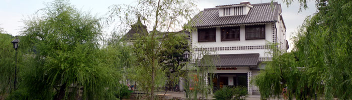
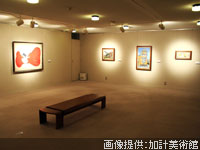
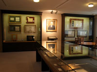
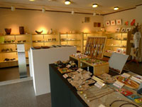

KAKE MUSEUM OF ART加計美術館

2002年（平成14年）に加計学園と高梁学園により設立された加計美術館は、地域文化の発信基地として関連校の学生による展示の他、色々な展示会が行われています。また、加計学園の創始者である加計勉の歴史が紹介されている加計勉 記念コーナーやミュージアムショップも設けられています。
展示室（1,2,3,5階）

1～3階と5階の展示スペースでは、関連校の学生による展示や先生による研究内容の展示の他、関連校以外にも色々な展示会が行われています。
加計勉 記念コーナー（4階）

開館5周年記念に設けられた加計勉記念コーナーでは、加計勉の歴史をパネルや映像、関連資料で紹介され、一角では加計グループの歴史もパネルで紹介されています。
加計美術館ミュージアムショップ

開館から2年後にオープンしたミュージアムショップでは、関連校である倉敷芸術科学大学の学生による作品や現在作家活動を行っている卒業生の作品も取り扱っている他、大原美術館やひろしま美術館、高梁市成羽美術館などのグッズや図録も販売されています。
一覧に戻る